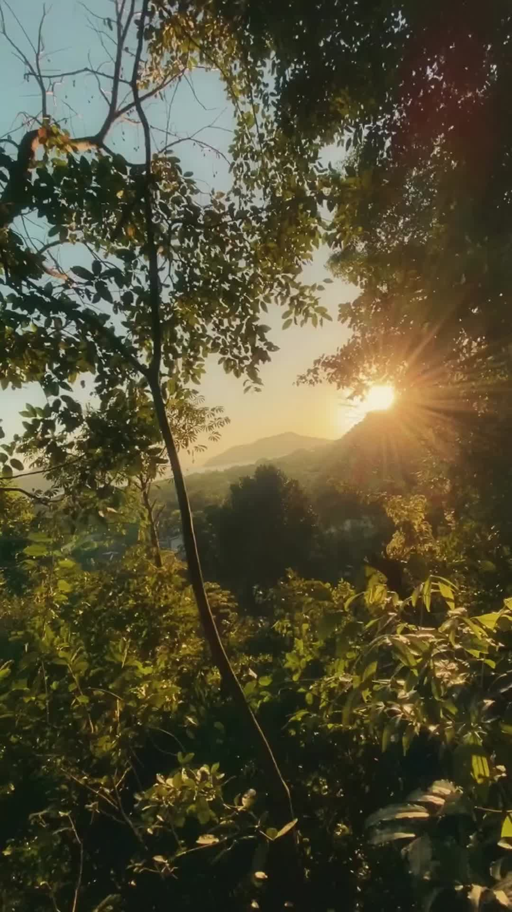
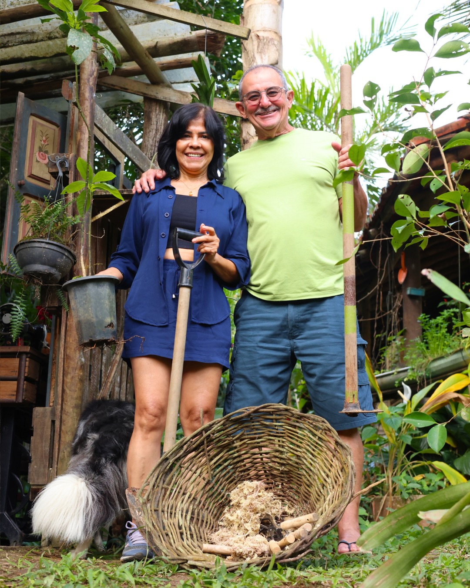
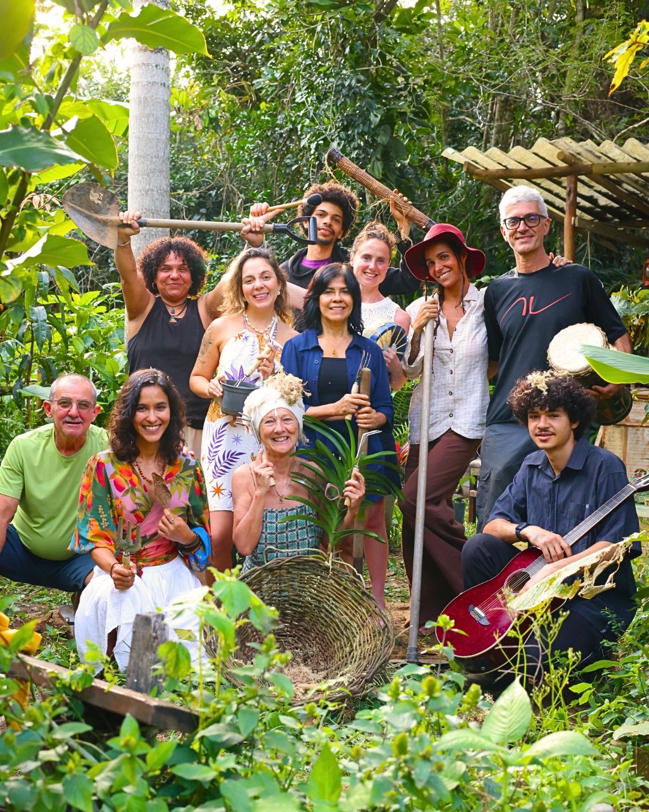
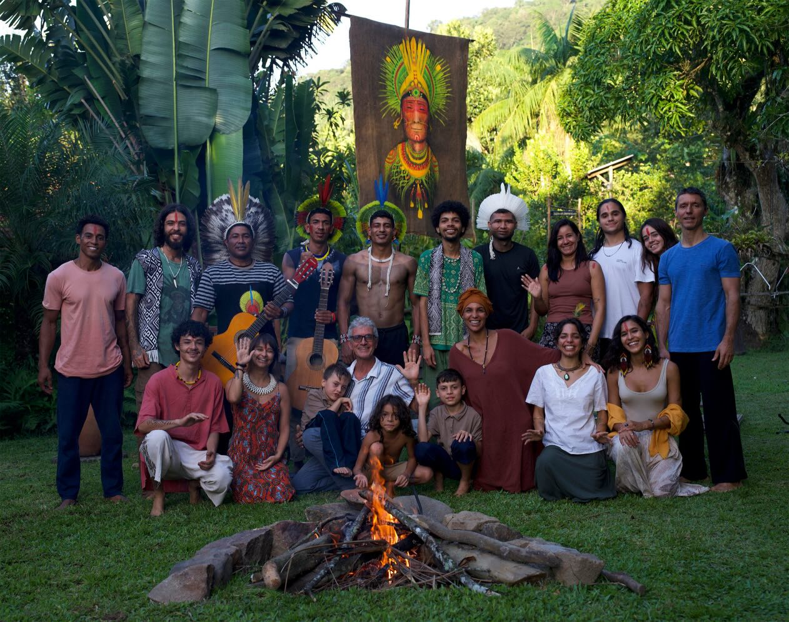

Suítes entre a floresta e o mar, numa pousada construída para durar — não para impressionar.
Conhecer o refúgioDá pra sentir quando o corpo pede um respiro que a rotina não dá — mas a maioria dos lugares que prometem "descanso" continuam parecendo hotel de passagem.

O Paradiso nasceu sobre uma antiga casa de pau a pique de 1978 — a arquitetura reaproveitou o que já existia em vez de arrasar pra começar do zero. Isso segue no dia a dia: redução real de plástico, materiais reaproveitados, e uma propriedade pensada pra integrar quem visita à mata, não pra dominar ela.
Não é decoração "eco" — é o jeito como o lugar foi de fato construído.
Água represada dentro da própria floresta, de acesso privado — nada de piscina de concreto genérica.
Água turquesa, poucos minutos de distância — o tipo de praia que a maioria dos turistas de Paraty nunca encontra.
Galinhas, coelho e um mico soltos pela propriedade — a natureza aqui não é só paisagem de fundo.
Mais de 2.000m² à beira do rio Carapitanga, com projeto social e permacultura funcionando todos os dias — não é fachada.
Cada suíte tem identidade própria — nenhuma é cópia da outra.
Aberta em pleno coração da mata atlântica, de frente para o mar — funciona como um mirante permanente. Terraço solarium no rooftop, pra tomar sol de dia e observar as estrelas à noite.
O sonho de dormir suspenso entre os galhos, de verdade — não é decoração com esse nome, é a experiência.
Uma acomodação fora do convencional, pensada pra quem quer hospedagem com identidade própria.
Mezanino de vidro voltado pra contemplar o nascer e o pôr do sol, sem sair da cama.
A poucos minutos da pousada tem uma enseada de água turquesa e cristalina, quase deserta — o tipo de lugar que normalmente só quem mora em Paraty-Mirim conhece.
Filmagem real do lugar, sem edição de cor — é assim mesmo.

O Paradiso é tocado por quem mora o próprio conceito: mata preservada, plástico reduzido, e uma relação próxima com a comunidade ao redor — não é terceirizado, é vivido todo dia por quem está na propriedade.
Um espaço educador de mais de 2.000m², ao lado do rio Carapitanga, que funciona todos os dias — não só quando tem hóspede olhando.


Ateliê de canoas caiçaras, recepção de escolas e grupos, permacultura e o projeto social Beija Flor — funcionando todos os dias, não só na alta temporada.
Sem preço fixo de vitrine — fala com a gente pelo WhatsApp pra ver disponibilidade e valores da temporada certa pra sua vinda.
Falar no WhatsApp